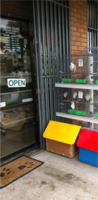
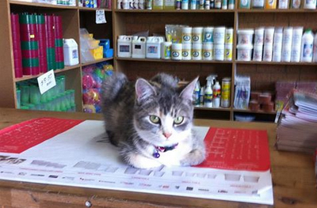
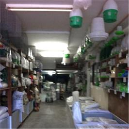
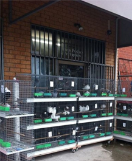

The story behind Thomastown Produce & Pet Supplies and its proprietors, Sam and Rosanna Cavalieri
The story behind Thomastown Produce & Pet Supplies and its proprietors, Sam and Rosanna Cavalieri. In the summer of ’91 Sam Cavalieri and wife Rosanna, decided to set up a small pet shop in the heart of Thomastown, a place that they had called home for quite some time. Prior, they had been trading at the local infamous Bundoora Market and had obtained a clientele with larger needs, which a little stall in the market could not sustain.
Within a short amount of time, Sam and Rosanna had to once again relocate their business to a larger premises also located in Thomastown, as their business had expanded and could no longer be accommodated by their small shop like set up. 21 Apex Court became their new sanctuary, and still is to date, a building were they could set up as many products as they wanted. This prompted Sam and Rosanna to take on larger clients who had pet shops of their own.
The business took an unexpected turn when pet shop owners from all over the state and country wanted to stock Sam and Rosanna's products, all of which were devised by Sam Cavalieri himself.
Today, Sam and Rosanna concentrate on accommodating their customers from all over Australia by supplying only the highest quality of animal grains and supplements plus much, much more along with a level of service deemed unmatchable!
Within a short amount of time, Sam and Rosanna had to once again relocate their business to a larger premises also located in Thomastown, as their business had expanded and could no longer be accommodated by their small shop like set up. 21 Apex Court became their new sanctuary, and still is to date, a building were they could set up as many products as they wanted. This prompted Sam and Rosanna to take on larger clients who had pet shops of their own.
The business took an unexpected turn when pet shop owners from all over the state and country wanted to stock Sam and Rosanna's products, all of which were devised by Sam Cavalieri himself.
Today, Sam and Rosanna concentrate on accommodating their customers from all over Australia by supplying only the highest quality of animal grains and supplements plus much, much more along with a level of service deemed unmatchable!


